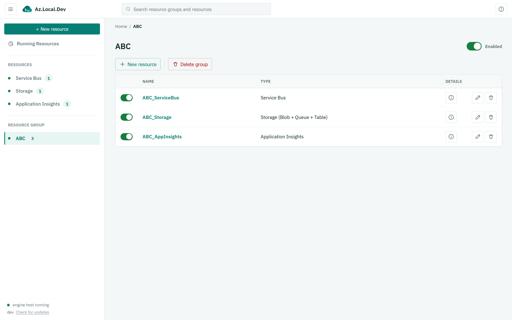

Real protocol surfaces
Connect through AMQP 1.0, Blob/Queue/Table REST, Breeze ingestion, and OTLP/HTTP JSON. There is no project-specific client library to adopt.
Windows desktop emulatorLatest release
Azure services, running locally.
Build and test with Azure Service Bus, Storage, and Application Insights on your own machine. Real wire protocols, official SDKs, one quiet tray app.
Windows x64 No Azure subscription required

A shorter local loop
Az.Local.Dev speaks the protocols your application already uses. Change the endpoint, keep the SDK and development workflow.
Connect through AMQP 1.0, Blob/Queue/Table REST, Breeze ingestion, and OTLP/HTTP JSON. There is no project-specific client library to adopt.
Create resource groups, start and stop services, inspect queues and messages, browse storage, and review local telemetry from one place.
Resource topology and supported service data are restored automatically. Keep developing without rebuilding your local environment each morning.
Use familiar local connection strings or point identity-style clients at the TLS endpoints with your existing developer credential.
Three resource families
AMQP 1.0
Develop queue-backed workloads with scheduled, deferred, dead-lettered, and peek-locked messages.
sb://localhost:5672Azure REST
Run Blob, Queue, and Table Storage together as one local account using Azurite-compatible ports.
127.0.0.1:10000–10002Breeze + OTLP
Send classic Application Insights telemetry or OpenTelemetry data and inspect it locally.
/v2/track · /v1/tracesDownload
Az.Local.Dev is a portable Windows application. Extract it, run the executable, and the dashboard opens in your browser.
Current release
Portable ZIP · Windows 10/11 · No installer
Run the release
Keep the executable anywhere convenient. No system-wide installation is required.
The tray app starts the engine host and opens the dashboard on first launch.
Add a resource, copy its connection string, and use it in your app or Functions project.
# Extract the downloaded release
Expand-Archive `
"$env:USERPROFILE\Downloads\AzLocalDev-x86_64-pc-windows-msvc.zip" `
"$env:USERPROFILE\Apps\AzLocalDev"
# Start the tray application
& "$env:USERPROFILE\Apps\AzLocalDev\AzLocalDev.exe"Dashboard available at 127.0.0.1:7777
Build from source
Use the Rust stable toolchain and the MSVC target on Windows. Cargo compiles the dashboard and all emulator engines into one release executable.
git clone https://github.com/BipulRaman/AzLocalDev.git
cd AzLocalDev
# Build the optimized desktop application
cargo build --release --locked -p emu-gui
# Run it directly from the workspace
.\target\release\AzLocalDev.exeLocal by default
Use your normal client libraries, Functions bindings, and telemetry exporters against a stack you can start, inspect, and reset locally.
Download for Windows